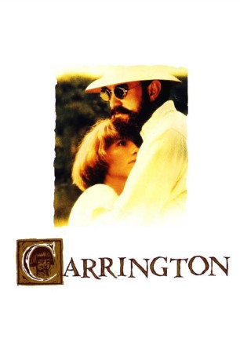

#9409 Carrington - Liebe bis in den Tod
Alternativ: Carrington
 
 IMDB-Wertung: 6.9 / 10
IMDB-Wertung: 6.9 / 10  Metascore: 0
Metascore: 0 
Vor dem ersten Weltkrieg begegnen sich die englische Malerin Dora Carrington und der homosexuelle Schriftsteller Lytton Strachey. Zwischen beiden entwickelt sich eine platonische Liebesgeschichte, die die englische Gesellschaft brüskiert.
Jahr: 1995
Dauer: 117 Minuten
FSK: 12
Land: England Studio: Scotia International FilmverleihTonspuren: DD5.1 - ,
Untertitel:
Auflösung: 1080p (1920x1040) Größe: 6922 MB
Genre: Drama, Liebe, Biographie
Regisseur: Christopher Hampton
Drehbuch: Christopher Hampton, Michael Holroyd
Soundtrack: Michael Nyman
Darsteller:
Datei: X:\1995\Carrington - Liebe bis in den Tod (1995, FSK12, 1920x1040).mkv seit 30.08.2018
Festplatte: HD 1992-1995
 Es gibt insgesamt 85 Filme in der Gruppe '1995'
Es gibt insgesamt 85 Filme in der Gruppe '1995'